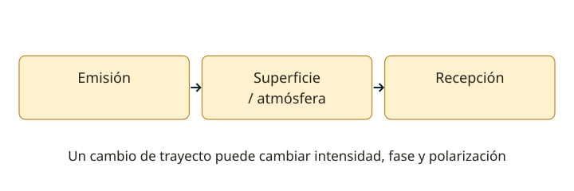

Lección 14 de 16
Propagación, ionosfera y desvanecimiento
Elige una explicación física para los cambios de señal y distingue onda terrestre, trayecto directo y propagación ionosférica.
Más de un camino
Una señal puede llegar por trayecto directo, reflexión, difracción, onda de superficie o propagación ionosférica. La frecuencia, antenas, relieve, suelo y atmósfera determinan qué mecanismos predominan. HF abarca 3–30 MHz; VHF, 30–300 MHz; UHF, 300–3.000 MHz. Estos nombres describen intervalos, no una promesa de distancia ni los límites autorizados para cada licencia.
Onda de superficie y línea de vista
La onda de superficie sigue el terreno con pérdidas dependientes de frecuencia y conductividad; suele ser más significativa a frecuencias bajas. En VHF/UHF, la altura y obstáculos influyen mucho en la cobertura habitual por trayecto directo y refracción troposférica. Elevar una antena puede despejar obstáculos y ampliar el horizonte radioeléctrico. Difracción y reflexiones pueden llevar señal a lugares sin visión óptica, con resultados variables. Un cerro o edificio no produce una atenuación fija universal.

La ionosfera cambia
La radiación solar ioniza regiones de la atmósfera. Las regiones D, E y F tienen distintos comportamientos y cambian con hora, estación y actividad solar. La región D suele producir más absorción de HF baja durante el día; la región F favorece muchos enlaces de larga distancia. La refracción puede devolver ondas a la superficie para ciertas frecuencias y ángulos; otras atraviesan la ionosfera. No es una pared metálica que refleje cualquier señal de la misma forma.
Frecuencia y distancia de salto
La frecuencia máxima utilizable (MUF) depende de la trayectoria y condiciones; una frecuencia por encima puede no retornar. La frecuencia mínima utilizable depende, entre otros factores, de absorción y ruido. La frecuencia crítica corresponde a incidencia vertical en una capa bajo condiciones definidas. La distancia de salto es la distancia mínima de retorno para un caso dado; entre cobertura terrestre y retorno ionosférico puede existir una zona de silencio. El ángulo de salida de la antena influye en la distancia cubierta.
Fading y trayectos múltiples
Dos señales de la misma emisión que llegan por caminos distintos pueden reforzarse o cancelarse por su fase. Cambios de ionosfera, polarización y recorrido producen desvanecimiento o fading. Puede ser selectivo en frecuencia y deformar una señal modulada. Variar hora, banda, emplazamiento o polarización puede ayudar según la causa. Más potencia no elimina una cancelación profunda ni corrige por sí sola una antena mal ubicada.
Observar sin sacar conclusiones apresuradas
Escucha balizas y estaciones conocidas, anota hora, frecuencia, modo y condiciones de antena. Un solo contacto largo no demuestra cobertura permanente ni que un equipo sea superior. En VHF también pueden darse propagación troposférica anómala, esporádica E o enlaces por satélite, con necesidades y geometrías distintas. Planifica con el mecanismo esperado y comprueba en el lugar; el simulador evalúa conceptos, no garantiza comunicaciones en terreno.
Resuelve paso a paso
Cambiar frecuencia
Para λ = 15 m, f ≈ 300/15 = 20 MHz. Es HF. La relación describe la onda; no afirma que 20 MHz esté disponible para transmitir con cualquier licencia.
Comprender el silencio
Si una estación cercana llega por superficie y otra distante por ionosfera, una situada entre ambas podría no recibirse. Esa zona depende de las condiciones; no es necesariamente una avería del receptor.
Comprueba lo aprendido: ¿Una señal que cae y vuelve durante un contacto demuestra que el transmisor remoto está fallando?
No. Puede ser fading, obstáculos, interferencia u otra causa. Compara observaciones antes de atribuir el cambio a un equipo.
Preguntas oficiales de este tema
Selecciona una alternativa y pulsa «Comprobar respuesta». Si fallas, podrás ver la respuesta correcta para seguir aprendiendo. Las preguntas con incidencias documentales se muestran solo para consulta y no se califican.
Continúa tu recorrido
Fuentes de estudio: programas técnicos y banco SUBTEL, apéndices A–E, versión 06/12/2020, y sus solucionarios oficiales. Reglamentación: Decreto 523, versión 21/06/2013; evaluación: Resolución Exenta 2620/2023. Revisión documental: 11/11/2026. Explicaciones, cálculos y esquemas didácticos de RUFCOM. Consultar documentos oficiales.